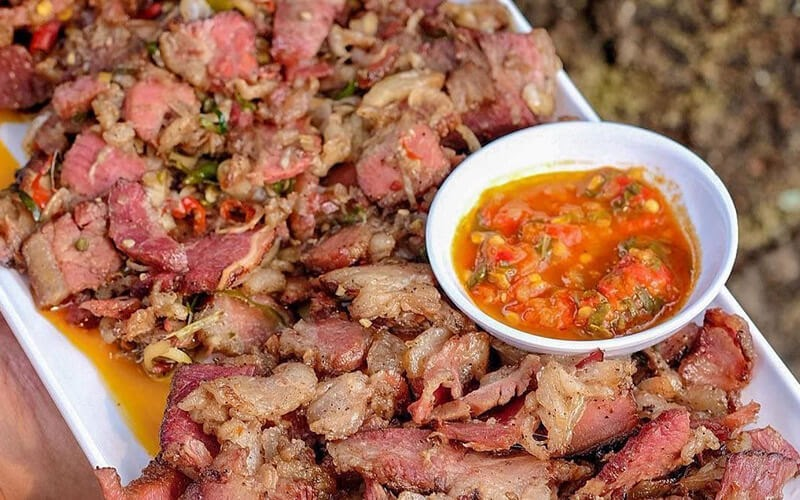

Menu Makanan
Rasa Autentik Maumere
Rasa Autentik Maumere
:quality(100)/photo/2023/03/20/resep-jagung-bose-enak-dan-prakt-20230320121402.jpg) Ikonic
Ikonic"Dalam semangkuk jagung, ada kebersamaan"
Makanan pokok masyarakat Flores sejak abad ke-16 yang menggantikan beras di daerah pegunungan.

Legendaris"Asap yang membawa kehormatan"
Teknik pengasapan daging khas Flores, simbol penghormatan tertinggi bagi tamu.
 Khas
Khas"Kehangatan keluarga dalam satu mangkuk"
Sup jagung manis khas Flores yang melambangkan kebersamaan.
 Pesisir
Pesisir"Laut memberi, manusia bersyukur"
Hidangan pesisir Maumere yang memanfaatkan hasil laut Segar Selat Flores.
 Leluhur
Leluhur"Kesederhanaan adalah kekuatan"
Makanan pokok tertua masyarakat pegunungan Flores sebelum jagung dikenal.
 Tradisional
Tradisional"Alam adalah dapur terbaik"
Tradisi memasak nasi dalam bambu yang menghasilkan aroma khas tak terlupakan.
 Warisan
Warisan"Kesabaran dalam setiap tumbukan"
Jagung yang ditumbuk halus, simbol ketelitian masyarakat Flores.
 Unik
Unik"Rasa yang hanya dimiliki Flores"
Sambal menggunakan daun luat endemik NTT yang tak ditemui di tempat lain.
 Sakral
Sakral"Persatuan rasa dalam keragaman"
Adaptasi lawar khas Flores menggunakan bahan lokal, sering untuk upacara adat.
 Cemilan
Cemilan"Kegembiraan dalam letupan"
Popcorn khas Flores dari jagung lokal dan minyak kelapa.